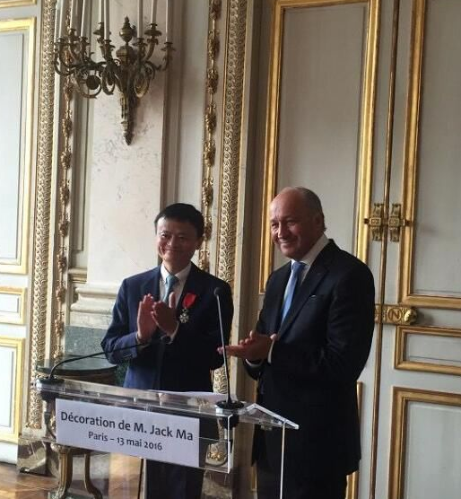
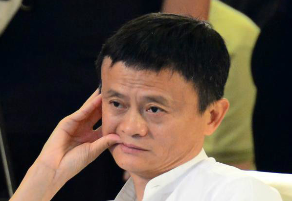
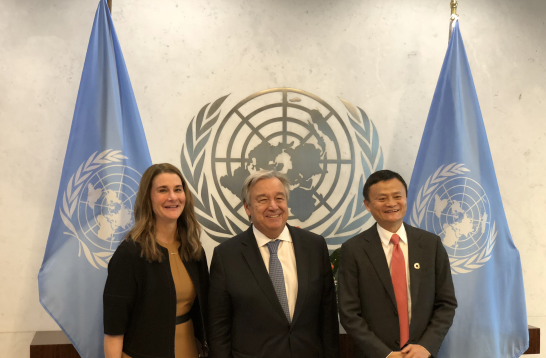

人物简介
马云，男，汉族，中共党员 ，1964年9月10日生于浙江省杭州市，祖籍浙江省嵊州市谷来镇，阿里巴巴集团主要创始人。
现担任阿里巴巴集团董事局主席、日本软银董事、大自然保护协会中国理事会主席兼全球董事会成员、华谊兄弟董事、生命科学突破奖基金会董事、联合国数字合作高级别小组联合主席。
人物履历
| 时期 | 经历 |
|---|---|
| 1995.02-1996.03 | 创办中国黄页，在网上宣传浙江的经济文化 |
| 1993.03 | 创办阿里巴巴 |
| 2003.05 | 马云创立淘宝网，开始抢夺eBay易趣C2C市场 |
| 2004.12 | 马云创立第三方网上支付平台支付宝 |
| 2007.11 | 马云创立的阿里巴巴网络有限公司在香港联交所主板挂牌上市 |
| 2013.05 | 联合多家民营快递企业联合成立菜鸟网络科技有限公司 |
| 2017.07 | 马云以354亿美元身家排在第18位，重新取代王健林成为华人首富 |
| 2018.09 | 即2019年9月10日，他将不再担任集团董事局主席，届时由现任集团CEO张勇接任 |
身份兼职
- 阿里巴巴集团董事局主席
- 日本软银董事
- 大自然保护协会中国理事会主席
- 生命科学突破奖基金会董事
- 华谊兄弟董事
- 联合国数字合作高级别小组联合主席
获得荣誉
- 中国经济十年商业领袖十人之一
- 全球50位最伟大领袖
- 科技创业名誉博士学位士
- 改革先锋称号，颁授改革先锋奖章
- 全球华人首富（马云及其家族财富）
人物轶事
一、围棋
马云在大学时学下围棋，曾以大排为赌注把外语系所有的男生杀了个遍，并因此喜欢上了战略布局，中盘角逐，收官。 并且在大学毕业那年被浙江嵊州少体校一名5、6岁的棋童杀得“丢盔弃甲”。
二、花名
马云热爱武侠文化，也把对金庸武侠小说中武侠英雄的痴迷，延伸到了公司文化层面：要求阿里巴巴每个员工都要有个“花名”，要出自武侠或玄幻小说中的正面角色。马云的办公室叫“桃花岛”，会议室叫“光明顶”，洗手间叫“听雨轩”等。
三、功夫
马云热衷太极拳，并从太极文化中悟出了许多企业经营思路。 马云出席各类重要场合时都很少穿西装，他有不少衣服上都缀着中式传统的盘扣，也不止一次在公开场合表演他的太极功夫。
爱好中式生活的马云一向崇尚武侠文化，他的太极情缘由来已久。在大学刚刚毕业的时候，马云就曾在西湖边上学了很长时间的杨氏太极，先后师从过9位师傅。
2010年4月，马云远赴太极“圣地”河南焦作的陈家沟。在陈家沟，马云见到了景仰已久的王西安（陈氏太极拳第十九代传人，当代陈氏太极拳代表人物）并拜其为师。
四、油画
2015年10月4日，马云的第一幅油画作品《桃花源》在香港的苏富比
以4220万港币(约3400万人民币)被拍卖。拍卖会现场，经过40多次的加价，最终以高价拍出。
《桃花源》是马云与中国艺术家曾梵志携手于2014年创作的，直径为79.6厘米。两人先以涂，再以点，最后以刮擦的方式，在平铺的画布上反复来回，描绘的是行星地球。马云说：“我觉得我们画一个地球，保护地球，保护海，保护空气，保护水。”这幅画拍卖所得将捐给桃花源生态保护基金会。
人物活动
-
2000年7月10日，马云成为《福布斯》杂志封面人物。
2009年，马云加入TNC中国理事会。

2009年5月5日，亚太经济合作组织（APEC）工商咨询委员会（ABAC）任命马云为2010年ABAC行动计划和APEC资源工作委员会（ABAC ACTION PLAN AND APEC RESOURCES WORKING COMMITTEE）主席。
2010年4月16日，马云加入大自然保护协会（TNC）全球董事会。
2013年5月11日，马云出任TNC（大自然保护协会）中国理事会主席。同年5月，马云宣布将和中国其他的几位企业家一起，为中国全球保护基金筹集1500万美金，投入发展中国家的绿色计划。
2013年9月27日，阿里巴巴集团创始人马云夫妇作为捐助人正式加入生命科学突破奖基金会，两人每年将为生命科学突破奖基金捐献300万美金，马云将会出任全球生命科学突破奖基金会理事。
2013年10月受邀出任英国首相戴维·卡梅伦的特别经济事务顾问。
2014年4月，马云向自己的母校杭州师范大学捐赠1亿元人。
马云向母校捐赠1亿元人民币。

2015年1月，马云作为亚洲和大洋洲地区唯一的私营部门代表，当选全球互联网治理联盟委员会成员。
2015年4月，马云获第12届“中国首善”称号， 捐赠额达124亿元。
2015年4月10日，由马云、马化腾出任该机构董事会联席主席的“桃花源生态保护基金会”宣布成立，45名知名企业家都参与到这一项目中，马云说：“取名‘桃花源’，我们希望中国10年、20年之后能拥有更纯净的水和空气”。
2015年6月30日，全球互联网治理联盟在巴西圣保罗召开全体理事会，选举了3名联合主席，阿里巴巴董事局主席马云当选理事会联合主席。
2015年9月8日，胡润2015年华人慈善报告出炉，马云通过捐赠阿里巴巴股权设立慈善信托基金，第一次的高调捐赠就成为中国最大单笔个人捐赠，当时此部分股权市值约145亿元，该基金主要用于环境、医疗、教育和文化领域。马云的太太张瑛也同样热心慈善，前年与马云共同加入美国生命科学突破奖基金会，并承诺每年为其捐赠1800万元。
2015年9月11日消息，联合国妇女署今日宣布阿里巴巴集团董事局主席马云将受邀参加9月27日在纽约联合国总部举行的全球妇女峰会。
2015年9月15日，北京大学首届社会公益管理硕士项目

2015年9月16日，马云公益基金会在北京启动“马云乡村教师计划暨首届马云乡村教师奖”。从2015年开始，马云公益基金会将会每年拿出1000万元人民币奖金，向当年入选的100名乡村教师提供资助和持续三年的专业发展支持。
2015年9月28日，全球妇女峰会在纽约联合国总部召开，马云作为全球唯一的企业家代表在会上发言并汇报妇女工作。
2015年10月13日下午，2015年天猫双11全球狂欢节宣布启动，在杭州西溪园区的天猫喵鲜生与全球百大生鲜协会签约现场展示区，阿里巴巴集团董事局主席马云现场扫码拍下今年双11生鲜第一大单——购买了一条重达68公斤的蓝鳍金枪鱼，价格为38888元。
2015年10月20日，阿里巴巴集团董事局主席马云受邀出任英国首相戴维·卡梅伦的特别经济事务顾问。
2015年10月24日，浙商总会成立大会暨第一次会员代表大会在杭州举行。会上选举阿里巴巴集团董事局主席马云为会长。
2015年10月31日，2015年复旦管理学奖励基金会颁奖典礼暨十周年总结会在上海复旦大学隆重举行，复旦管理学奖励基金会理事长、第十届全国政协副主席徐匡迪为阿里巴巴集团董事局主席马云颁发了“复旦企业管理杰出贡献奖”。
2015年11月18日，阿里巴巴董事局主席马云受邀在菲律宾举。

2015年11月30日，马云、比尔·盖茨、马克·扎克伯格……这些全球顶尖科技公司创始人的名字同时出现在一份27人的名单上--他们投入巨资联手发起了一项史无前例的“清洁能源研究计划”。这一计划目的是集合政府与企业的力量，找到除了风能、太阳能以外更多零碳排放能源的可能，从技术上找到更多阻止全球变暖的方法。马云无疑是这一项目中最受关注的中国企业家。
2015年12月6日，阿里巴巴集团董事局主席马云受邀出席联合国气候变化巴黎大会并发表主题演讲。
2015年12月16日，出席了第二届世界互联网大会开幕式。
2015年12月18日，在第二届世界互联网大会上，马云当选全球互联网治理联盟联合主席。
2016年1月17日晚，首届“马云乡村教师奖”颁奖典礼在海南三亚举行。
马云、李连杰、那英、赵薇、汪涵、高晓松、郎朗等明星大腕出席典礼，并带领西部六省100名获奖乡村教师走红毯。
2016年1月19日，阿里巴巴集团董事局主席马云受邀成为联合国“可持续发展目标”的倡导者。马云为受邀的唯一一位中国企业家。
2016年1月28日，北京师范大学中国公益研究院发布《2015中国捐赠百杰榜》，阿里巴巴马云以2.3亿多元的捐赠额排名第十。
2016年3月1日，由阿里巴巴董事局主席马云和影星李连杰共同创办的太极禅国际文化发展有限公司首家生活馆在北京通州鲁能格拉斯小镇开业。
2016年3月19日—3月21日，马云参加由国务院发展研究中心主办、中国发展研究基金会承办的“中国发展高层论坛2016”年会。19日上午，马云在钓鱼台国宾馆对话全球社交网站公司Facebook创始人兼首席执行官马克·扎克伯格。
2016年3月24日，马云参加博鳌亚洲论坛2016年年会。
2016年3月27日，湖畔大学在杭州举行了第二届的开学典礼，阿里巴巴董事局主席马云作了开学致辞。

2016年5月8日，马云任中国企业家俱乐部主席。
2016年5月8日，马云任中国企业家俱乐部主席。
2016年5月13日，法国政府为马云举行了授勋仪式，授予“法国荣誉军团勋章”，以表彰他在中法合作中的杰出贡献。
2016年7月9日，阿里巴巴集团董事局主席马云参加由杭州市政府、阿里巴巴公益基金会主办的首届全球XIN公益大会。
2016年9月21日，联合国秘书长潘基文亲自签发任命书，宣布马云受邀出任联合国贸易和发展会议青年创业和小企业特别顾问。
2017年1月9日，美国候选总统特朗普和阿里巴巴主席马云进行了一场“Great Meeting”非常棒的会谈，并称马云是一个伟大的企业家。
2017年10月13日，马云在杭州师范大学做演讲，再投入5000万元，与母校一起建设阿里巴巴商学院。
2017年10月28日，马云在个人微博上公布了一张电影海报，并配以大有深意的“那一夜，那一梦”六个字，证实参演影片《功守道》。
2018年1月17日，马云以个人名义向团结香港基金捐赠5000万港元，以支持教育、青年、创新等领域的政策研究和相关工作。
2018年5月9日，马云当选中国网络社会组织联合会副会长。
2018年7月13日，联合国推出联合国数字合作高级别小组主席，任命马云为联合主席。

9月24日，马云以联席主席身份主持了联合国数字合作高级别小组的首次线下会议。
2018年11月6日，马云参加世界互联网大会组委会第二届高级别专家咨询委员会2018年度会议，并与维纳·措恩一起被任命为新一届高咨委联合主席。